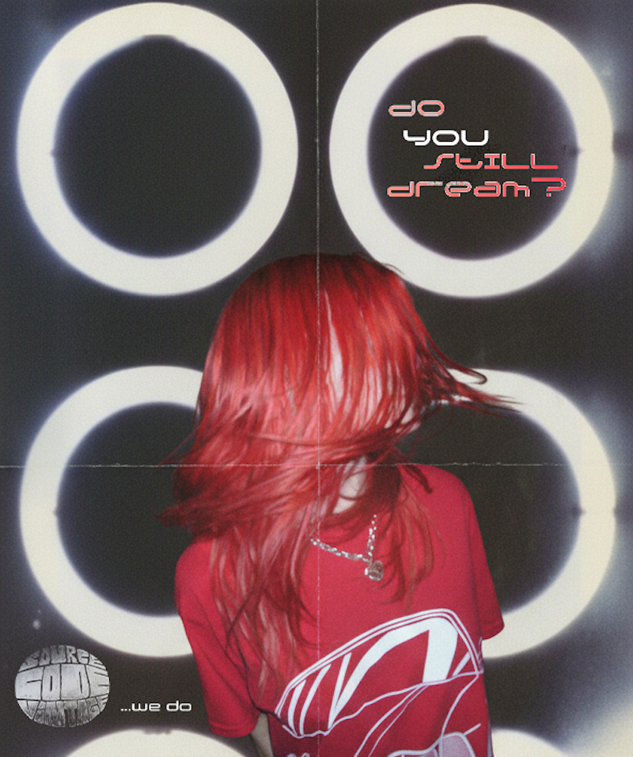

Source Code Vintage is an independent vintage clothing brand focused on curating apparel through a lens of nostalgia, technology, and internet culture. As lead designer and developer, I was responsible for shaping the brand's visual identity and translating its creative vision into a distinctive digital shopping and archive experience. The goal was to create a platform that felt immersive and unique while remaining easy to navigate.
The project combined graphic design, branding, typography, layout design, and interactive media to create an immersive online presence that reflected the personality of the brand. Every visual element was developed to reinforce a cohesive identity while encouraging exploration and discovery through the browsing experience.
The visual experience for Source Code Vintage was built around experimental layouts, custom graphics, motion-based interactions, and unconventional navigation patterns inspired by early internet aesthetics and contemporary fashion culture. Rather than relying on standard e-commerce conventions, the design aimed to create a memorable and engaging experience that felt unique to the brand.